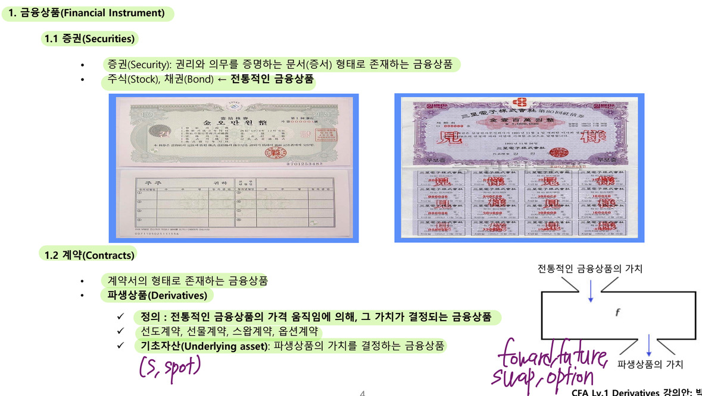

Derivatives
Financial Instrument

Securities
- 권리와 의무를 증명하는 문서 형태로 존재하는 금융상품
- 주식, 채권 ← 전통적인 금융상품
Contract
- 계약서의 형태로 존재하는 금융상품
- Derivatives
- 전통적인 금융상품의 가격 움직임에 의해 그 가치가 결정되는 금융상품
- forward, futures, swap, option
- Underlying asset - 기초자산, 파생상품의 가치를 결정하는 금융상품
48.b. Contrast forward commitments with contingent claims.
48.c. Define forward contracts, futures contracts, options (calls and puts), swaps, and credit derivatives and compare their basic characteristics.
Forward commitment

- forward contract - 미래 특정시점에 기초자산을 미리 정한 가격으로 매매하기로 약정하는 계약
- futures contract - 미래 특정시점에 기초자산을 미리 정한 가격으로 매매하기로 약정하는 계약, 거래소에 의해 표준화되고, 청산소에 의해 이행이 보증됨
- swap contract - 거래당사자 간에 미래 일정기간 동안 서로 다른 현금흐름을 교환하기로 약정하는 계약
- 시리즈로 이루어지는 forward contract와 같음
- Forward commitment derivatives의 경우 반드시 계약을 이행해야 할 의무를 쌍방이 가짐
- Bilateral obligation, forward commitment라고 함
- 사리고 한 사람은 반드시 미리 약정한 가격으로 사야 하고, 팔기로 한 사람은 반드시 미리 약정한 가격으로 팔아야만 함

Contingent claim


- 옵션은 call option, put option으로 나뉨
- call option - 미래 특정시점에 기초자산을 미리 정한 가격으로 살 수 있는 권리
- put option - 미래 특정시점에 기초자산을 미리 정한 가격으로 팔 수 있는 권리
- 옵션 계약은 매수자는 권리를 갖고, 매도자는 의무만 가짐
- Unilateral obligation, contingent claims라고 함
- 매도자는 매수자로부터 프리미엄을 수취함
- 권리를 가진 매수자는 옵션의 행사 여부를 선택할 수 있음
- 행사할 수도 있고, 안 할 수도 있는데, 행사한다면 옵션 매도자는 반드시 거래에 응해야 함
Credit Derivatives


- Credit derivatives는 금융상품에 내재된 credit risk가 기초상품
- 대표적인 상품이 CDS로 채권의 파산에 대한 보험상품이다.
- protection buyer는 protection seller로부터 CDS를 매입하고, CDS 프리미엄을 지급한다.
- 부도 이벤트가 발생하면 protection seller는 buyer에게 보험금을 제공한다.
Market
48.a. Define a derivative and distinguish between exchange-traded and over-the-counter derivatives.

Exchange-traded Derivatives
- 장내파생상품
- 기초자산의 종류, 계약단위, 만기, 결제방식, 거래시간, 거래방법 등이 표준화 되어있고 제도화 되어 있음
- clearing house를 통해 모든 계약의 거래 상대방이 되게 하고, 계약의 이행을 보증하게 함
- futures, options
Over-the-counter Derivatives
- 장외파생상품
- 거래 당사자간 사적 계약을 통해 이루어짐
- 계약조건의 커스터마이징 가능
- 거래 상대방이 계약을 이행하지 않을 위험이 있음 - counterparty risk
- forward, swap, option
48.e. Describe purposes of, and controversies related to, derivative markets.

Criticism of derivatives
- too risky
- high leverage
- complex structure
benefits of derivatives
- provide price information
- price discovery
- allow risk to be managed and shifted among market participants
- risk management, risk shifting (hedge)
- reduce transactions costs
- 시장효율성 제고
Risk
- 일반적으로 금융에서의 리스크는 변동성을 이야기 함
- 보유 금융자산의 가치 상승 및 하락 모든 것이 위험 - 기대치를 벗어나기 때문
- 파생상품은 금융자산이 가지고 있는 위험을 제거할 수 있음
- 위험을 제거하려면 금융상품을 팔거나, 파생상품을 이용해 원하는 시점까지 위험을 제거할 수 있음
48.f. Explain arbitrage and the role it plays in determining prices and promoting market efficiency.


- 차익거래 기회는 투자자들의 비이성적 행동이나 시장의 비효율에서 발생한다.
- 차익이 발생하는 상품의 매수와 매도를 동시에 해야 arbitrage이다.
- 추가적인 비용이나 위험부담 없이 이익을 얻어야 한다.
- There are two arbitrage arguments that are particularly useful in the study and use of derivatives.
- law of one price
- arbitrage requires an investment
- If a portfolio of securities or assets will have a certain payoff in the future, there is no risk in investing in that portfolio. In order to prevent profitable arbitrage, it must be the case that the return on the portfolio is the risk free rate.
- forward price는 차익거래가 발생하지 않을 가격으로 결정되어야 함
Market

- spot market은 거래시점과 결제가 동일한 시점에 이루어지는 시장이다.
- forward market은 거래시점에 미래시점에 기초자산을 매매하기로 약정하는 시장이다.
- trade 시점과 settlement 시점이 다르다.
- forward price는 미래시점에 기초자산을 매매하기로 약정한 가격이다.
Forward contracts


- 미래 특정 시점에 특정 기초자산을 미리 정한 가격으로 매매하기로 약정하는 계약
- expiration date - 기초자산을 매매하기로 약정한 미래의 특정 시점
- underlying asset - 매매하기로 약정한 자산, 현물
- financial asset, physical asset or commodity
- forward price - 기초자산을 매매하기로 약정한 가격
- position - 투자자의 투자 상태
- long position - 기초자산을 사기로 약정한 사람
- short position - 기초자산을 팔기로 약정한 사람
- Private contracts
- counterparty risk or default risk 존재
- customization 가능
- Contract date는 미래에 매매하기로 약정하는 계약서를 작성하는 날
- initial cost = 0임
- Contract date의 spot price = 0이라는 가정을 하기 때문
- future, swap도 동일
- initial cost = 0임

- payoff - derivative value at expiration
- long position의 경우 payoff = spot price at expiration - forward price at expiration
Payoff and Settlement

- Payoff is value at expiration
- Payoff of long position = Spot price at t - Forward price at t
- Short position = - long position
- 선도계약 당사자 간에는 Zero-sum Game
- Settlement - 파생상품 만기 시점의 결재 방식
Valuation

- Value - 금융상품의 가치
- Risk-averse Investor - 위험회피적 투자자
- 위험에 대한 보상을 요구, risk premium
- 미래 현금흐름을 할인할 때 spread를 붙여서 할인
- Risk-neutral investor - 위험중립적 투자자
- 위험에 대한 보상을 요구하지 않음
- Derivatives는 risk-neutral을 기본 가정으로 함 → discount rate = risk free rate
- Replication and Arbitrage
- risky asset + Hedged Derivatives = Risk-free Asset
- 무위험 결합포트폴리오
- risky asset과 derivatives의 조합으로 무위험 자산의 replication이 가능
- 만약 둘 사이에 차이가 있다면 → arbitrage
- risky asset + Hedged Derivatives = Risk-free Asset
Forward pricing

- 계약 시점에 가격을 산출하는 process를 pricing이라고 함
- forward pricing model에는 cost of carry model이 있음
- forward price = spot price + carrying cost
- No-arbitrage forward price
- assumption
- risk free rate으로 차입이나 대출이 가능 → risk-neutral 가정
- short-selling에 제한이 없음
- no tax, no transaction cost
- forward price = spot price + carrying cost
Carrying cost
- 차입하여 매입하는 경우 이자비용 발생
- 자기자본으로 매입하는 경우 기회비용 발생
Cost of carry model 확장

- underlying asset이 financial asset인 경우 → 보유 편익 발생 가능
- underlying asset의 cash flow → dividend, interest
- 보유기간동안의 편익은 보유비용을 감소시키는 효과
- forward price = (spot price - PV(Benefit)) * (1 + risk free rate)^T
- underlying asset이 commodity인 경우 → convenience yield가 발생
- convenience yield는 market demand에 즉각적으로 대응할 수 있는 Non-monetary benefit
- 회사, 환경에 따라 다르지만 추정 가능
- convenience yield는 마찬가지로 보유비용을 감소시킴
- forward price = (spot price + PV(cost) - PV(convenience yield)) * (1 + risk free rate)^T
- convenience yield는 market demand에 즉각적으로 대응할 수 있는 Non-monetary benefit
Valuation

- pricing - 계약시점에서 선도가격의 결정
- valuation - 다양한 시점에서 선도가격의 가치
- payoff - 만기 시점의 선도가격의 가치
- 파생상품의 현재가치는 미래 발생하는 payoff의 현재 가치

- payoff = spot price - forward price

- 추가적인 benefit or cost가 발생하는 경우 비용은 더 해주고, 이익은 빼준다.
Forward Rate Agreement

- 선도금리계약
- 미래 일정 구간 동안에 적용할 금리를 미리 약정하는 계약
- 미래의 금리를 사고 팔기로 약정하는 계약
- underlying asset - forward rate
FRA position
- FRA Long position - 선도 금리를 미리 사는 계약, 미래시점에 미리 약정한 금리로 돈을 차입
- 금리 상승 위험 hedge
- intereat rate이 오를 것 같으니 지금 사는 것
- 현물포지션 - 돈을 빌리고자 하는 사람
- 금리 상승 위험 hedge
- FRA Short position - 선도 금리를 미리 파는 계약, 미래시점에 미리 약정한 금리로 돈을 빌려줌
- 금리 하락 위험 hedge
- interest rate이 떨어질 것 같으니 지금 파는 것
- 현물포지션 - 돈을 빌려주려고 하는 사람
- 금리 하락 위험 hedge
FRA Hedge

Synthetic FRA

- synthetic position - 서로 다른 금융상품을 결합하여 새로운 형태의 금융상품을 만드는 것
- FRA value = synthetic FRA value
- the law of one price